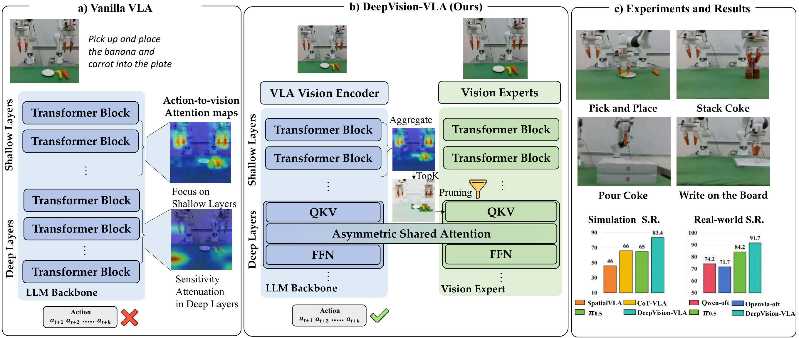
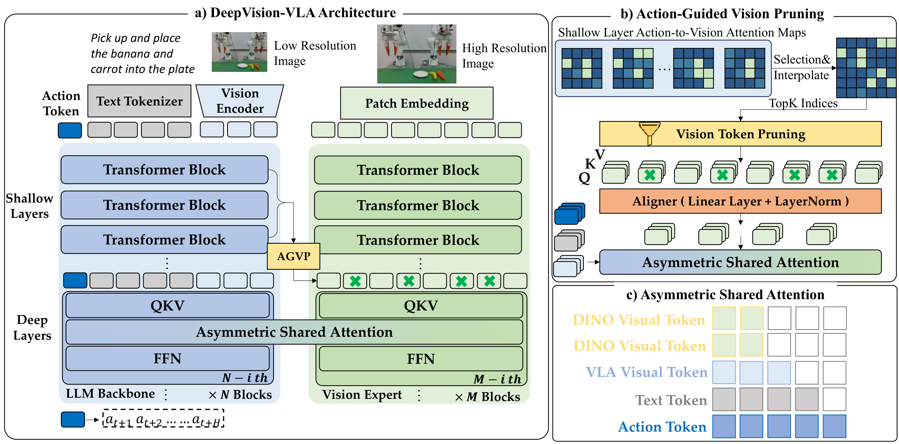

Baseline

Abstract
Vision-Language-Action (VLA) models have recently emerged as a promising paradigm for robotic manipulation, in which reliable action prediction critically depends on accurately interpreting and integrating visual observations conditioned on language instructions. Although recent works have sought to enhance the visual capabilities of VLA models, most approaches treat the LLM backbone as a black box, providing limited insight into how visual information is grounded into action generation.
Therefore, we perform a systematic analysis of multiple VLA models across different action-generation paradigms and observe that sensitivity to visual tokens progressively decreases in deeper layers during action generation. Motivated by this observation, we propose DeepVision-VLA, built on a Vision-Language Mixture-of-Transformers (VL-MoT) framework.
This framework enables shared attention between the vision foundation model and the VLA backbone, injecting multi-scale visual features from the vision expert into deeper layers of the VLA backbone to enhance visual representations for precise and complex manipulation. In addition, we introduce Action-Guided Visual Pruning (AGVP), which leverages shallow-layer attention to prune irrelevant visual tokens while preserving task-relevant ones, reinforcing critical visual cues for manipulation with minimal computational overhead.
DeepVision-VLA outperforms prior state-of-the-art methods by xx% and xx% on simulated and real-world tasks, respectively, providing new insights for the design of visually enhanced VLA models.
Method

Demonstrations
Pick up and place the banana and carrot into the plate
Cluttered Scene
Visual Distraction
Pour Cola
Baseline
Cluttered Scene
Visual Distraction
BibTeX
@misc{luo2026lookactingenhancingvision,
title={Look Before Acting: Enhancing Vision Foundation Representations for Vision-Language-Action Models},
author={Yulin Luo and Hao Chen and Zhuangzhe Wu and Bowen Sui and Jiaming Liu and Chenyang Gu and Zhuoyang Liu and Qiuxuan Feng and Jiale Yu and Shuo Gu and Peng Jia and Pheng-Ann Heng and Shanghang Zhang},
year={2026},
eprint={2603.15618},
archivePrefix={arXiv},
primaryClass={cs.CV},
url={https://arxiv.org/abs/2603.15618}
}